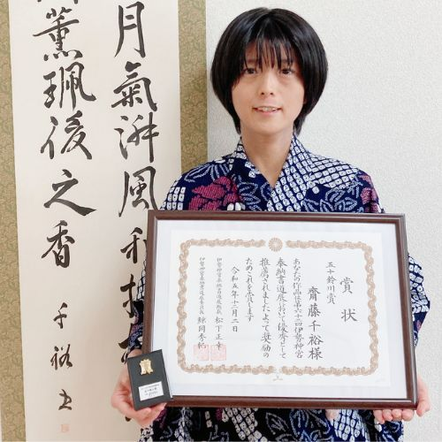

Code for Ichinomiya
育む（はぐくむ）
シビックテック
皆さんはシビックテック（CivicTech）をご存知ですか？市民（Civic）が自らデジタルの技術（Tech）を用いて、地域課題（Region）を解決していく取り組みのことです。日本では、東日本大震災後、Code for Japanという団体が誕生したことがきっかけで、シビックテックの活動が増えています。Code for Ichinomiyaは、愛知県一宮市にて、シビックテックの活動を行なっています。
代表：齋藤 仁志
【シビックテックの面白さを広めたい！】デジタル庁「デジタル推進委員」｜アプリ開発・データ可視化を軸に活動中｜オープンデータをフル活用｜行政とシビックテックの二刀流｜デジタルから世界を変えられるか？《受賞歴》UDCオープンガバメント協議会銀賞/PLATEAU賞/防災LOD賞/OSM賞 etc.

副代表：齋藤 千裕
【ビジョンを達成するスマイルプロジェクトをここから】 健幸で仕事もプライベートも自己実現を| 中医学(漢方)を学び中 健康を体現する！スマイルプロジェクト 主宰| 理学療法士の国家資格保持｜書道準師範 書道セラピー作る SDGs:3 | 家族と料理好き